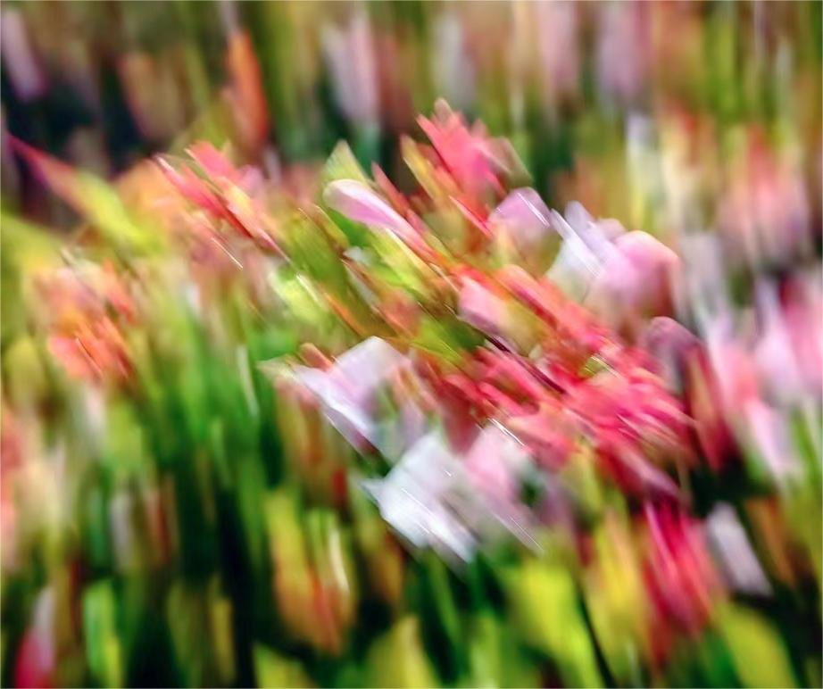

橘子汽水和粉色花花的故事
The Story of Orange Soda and Pink Flowers

本文讲述了一次电影散场后在雨中漫步并偶然拍下一张奇妙照片的经历。转写自当晚的一段录音，它粗糙又鲜活，极富生命力。
今天晚上有一个特别特别快乐和幸福的瞬间。
我走在一个小道上，是我看完电影准备回家的路上。然后下着一点小雨。然后我就把我的外套披在头上。我边走边放窦靖童和莫文蔚合唱的《天黑黑》，也一边跟着唱。
我刚才买了一瓶特别的橘子汽水，它的瓶子里面有一个小珠子，你喝的时候需要把那个珠子顶下去，才能把它倒出来喝。等我全都喝完了，那个珠子就在瓶子里面啦。
我一边走，那个珠子就在瓶子里面叮当作响。不知道为什么，我感觉那一瞬间特别奇妙。我一边顶着我的外套，一边哼着歌，还有个叮叮当当的伴奏。有点像小的录音棚或者卡拉ok。明明喝的是汽水，人却摇摇晃晃起来，仿佛醉汉的舞步。
初夏的雨夜，晚风非常凉爽，我的心情就无限地好。今天晚上，我还拍了张照片。也是非常偶然，它有一点糊，但是我觉得糊得非常地好看。后面我也多次尝试想再现这个东西，但是都不成功。我感觉就算是复制你自己，你也是很难做到的。可能这也是一种黑天鹅事件吧。感谢随机性对我的馈赠。我觉得这张照片特别美，想把它拿给你们看。一路上我的心情特别愉快，然后旁边的草丛里面，就是像这样的一些粉色的小花。
This is a story about a magical moment captured after a movie, walking in the rain and taking an accidental yet wonderful photo. Transcribed from a voice recording that evening - raw, vivid, and full of life.
Tonight, I experienced an incredibly joyful and blissful moment.
I was walking along a small path after watching a movie, heading home. It was drizzling slightly, so I draped my jacket over my head. As I walked, I sang along to "Tian Hei Hei" (Cloudy Day), a duet by Leah Dou and Karen Mok.
I had just bought a special orange soda - the kind with a marble inside the bottle that you need to push down to open and drink. After finishing the drink, the marble remained inside, creating a gentle rattling sound.
As I walked, the marble clinked rhythmically in the bottle. Somehow, that moment felt magical. There I was, sheltered under my jacket, humming along, with this impromptu percussion accompaniment. It felt like my own tiny recording studio or karaoke booth. Though I was only drinking soda, I found myself swaying like a tipsy dancer.
On this early summer rainy night, the evening breeze was refreshingly cool, and my heart was infinitely light. That evening, I also took a photo. It was completely spontaneous - slightly blurry, but beautifully so. I tried several times afterward to recreate it but never succeeded. Perhaps even replicating your own work is nearly impossible. Maybe this was my own black swan event. I'm grateful for this gift of randomness. I find this photo so beautiful and want to share it with you all. My heart was incredibly happy throughout the journey, and there, beside the path, were these pink flowers among the grass, just like this.
Note: Original text in Chinese, translated to English by Claude